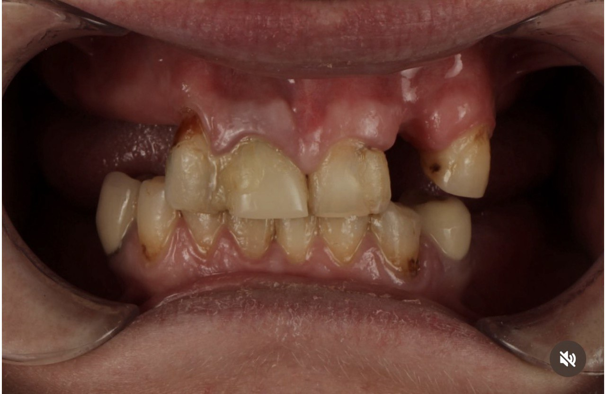
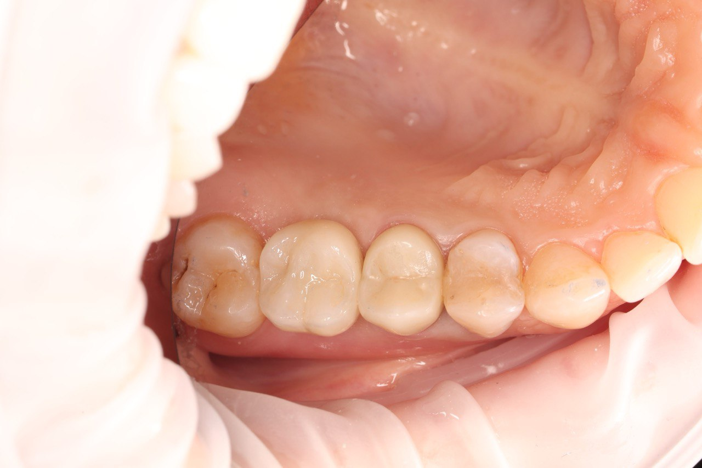

Технологии будущего:

Имплантация зубов — это восстановление утраченного зуба титановым корнем (имплантом), на который фиксируется коронка. В отличие от мостовидного протеза, имплант не требует обточки соседних здоровых зубов и останавливает атрофию кости на месте удалённого зуба. Жевательная нагрузка снова передаётся на челюсть — именно поэтому имплантация считается золотым стандартом замещения дефектов зубного ряда.
Клиника Harmony Dental Clinic работает в Киевском районе Одессы, на ул. Новаторов, 1А — это несколько минут от Таирова, Черёмушек и Седьмого километра. Мы устанавливаем импланты Straumann (Швейцария), MIS C1 (Израиль), Alpha Dent (Германия) и Unident (Украина) — от премиум- до бюджетного сегмента. Стоимость имплантации зуба под ключ в Одессе — от 620 $ вместе с абатментом и коронкой.
Каждый случай планируем цифрово: компьютерная томография, сканирование 3Shape TRIOS 4 без слепков и навигационный хирургический шаблон, который задаёт импланту точную ось и глубину. Это делает операцию короче, малотравматичной и предсказуемой по результату.
Выберите удобный мессенджер для быстрого ответа врача
Цифровое сканирование 3Shape TRIOS 4 вместо неприятных слепков. Мгновенная 3D-визуализация.
Детальное обсуждение этапов и фиксация полной стоимости. Без скрытых доплат.
Создание виртуального пациента и моделирование положения импланта ещё до операции.
Печать индивидуального хирургического шаблона для установки импланта с микронной точностью.
Быстрая и безболезненная установка по шаблону. Минимум травматизации и отёков.
Установка постоянной эстетической коронки, которая идеально повторяет форму вашего зуба.
Потеря даже одного жевательного зуба запускает цепь изменений, которые заметны не сразу. Первые месяцы ничего не беспокоит — именно поэтому визит к врачу откладывают на годы. Но каждый год ожидания делает будущее лечение дольше и дороже.
Кость живёт под нагрузкой. Как только корень зуба исчезает, участок перестаёт получать жевательное давление и начинает рассасываться: до 25 % ширины за первый год и до 40–60 % за три года. Именно поэтому имплант, установленный через год после удаления, часто уже требует костной пластики.
Соседние зубы наклоняются в сторону пустоты, а зуб-антагонист с противоположной челюсти постепенно выдвигается из лунки. Через 2–3 года места для коронки может просто не остаться — сначала придётся возвращать зубы на место ортодонтически.
Нагрузка, которая приходилась на утраченный зуб, перераспределяется на соседние. Они стираются быстрее, появляются трещины эмали, подвижность и оголение шеек. Один невосстановленный зуб со временем тянет за собой следующие.
Отсутствие боковых зубов меняет овал лица: щёки западают, углубляются носогубные складки. Плохо пережёванная пища увеличивает нагрузку на желудок, а при потере передних зубов страдает ещё и дикция.
Имплант устанавливается сразу после удаления зуба, в ту же лунку. Это сокращает лечение на 3–4 месяца, сохраняет контур десны и объём кости. Протокол возможен, если в области нет острого воспаления, а стенки лунки сохранены — это видно на КТ.
Самый предсказуемый протокол. Имплант устанавливают в сформированную кость, далее 3–6 месяцев остеоинтеграции, затем формирователь десны, абатмент и постоянная коронка. Подходит почти в любой клинической ситуации.
Эстетическая зона требует отдельного внимания к профилю десны и цвету коронки. Используем индивидуальный абатмент и безметалловую коронку (цирконий или E-max), чтобы край десны не просвечивал серым, а зуб не отличался от соседних.
Когда подряд отсутствуют 2–3 зуба, обычно достаточно двух имплантов, на которые фиксируется мостовидная конструкция. Решение дешевле, чем имплант под каждый зуб, и полностью возвращает жевательную функцию.
Если отсутствуют все зубы или они подлежат удалению — устанавливаем несъемный мост на 4 или 6 имплантах в день операции без долгого наращивания кости.
Премиум-сегмент и самая большая база клинических исследований в мире. Поверхность SLA ускоряет приживление. Выбираем, когда нужна максимальная предсказуемость — сложные случаи, эстетическая зона, сниженная регенерация.
Оптимальный баланс цены и качества. Коническая форма и агрессивная резьба дают высокую первичную стабильность, что особенно важно при одномоментной имплантации.
Европейское качество в среднем ценовом сегменте — самый популярный выбор наших пациентов. Надёжная система для восстановления как жевательных, так и фронтальных зубов.
Бюджетное решение, когда нужно восстановить жевательную группу без переплаты. Титановый сплав и протокол установки — те же, разница в поверхности и объёме исследований.
Если вы рассматривали Neodent, Osstem, Nobel Biocare или другую систему — на консультации сравним их характеристики с теми, которые устанавливаем мы, и честно объясним, где разница реальная, а где только в маркетинге.
Имплантация — не единственный способ закрыть дефект. Принципиальное отличие в том, что имплант заменяет корень зуба, а мост и съёмный протез работают только над десной и никак не останавливают атрофию кости.
| Критерий | Имплант | Мостовидный протез | Съёмный протез |
|---|---|---|---|
| Обточка соседних зубов | Не нужна | Обязательна — два живых зуба под коронки | Не нужна |
| Сохранение кости | Останавливает атрофию | Не останавливает: кость под мостом проседает | Не останавливает, атрофия ускоряется |
| Средний срок службы | Десятилетия | 7–10 лет | 3–5 лет, требует перебазировки |
| Ощущения во рту | Как собственный зуб | Близко к собственным зубам | Инородное тело, возможен рвотный рефлекс |
| Уход | Щётка, ёршик, ирригатор | Ирригатор обязательно — под мостом накапливается налёт | Снимается и чистится отдельно |
Мост остаётся разумным выбором, когда соседние зубы уже под коронками или значительно разрушены — тогда обтачивать фактически нечего. Съёмный протез оправдан как временное решение на период приживления имплантов или когда к операции есть противопоказания. В остальных случаях имплант оказывается дешевле в пересчёте на год службы.




Если зуб удалили давно, кость на его месте постепенно атрофируется — за первый год теряется до 25 % объёма. Чтобы имплант держался надёжно, ему нужны достаточные высота и ширина кости. Дефицит показывает компьютерная томография, и именно по КТ, а не «на глаз», решается, нужна ли костная пластика.
Костный материал и защитная мембрана восстанавливают ширину гребня. Часто выполняется одновременно с установкой импланта — без отдельной операции и без дополнительных месяцев ожидания.
Для верхней челюсти, когда до дна гайморовой пазухи не хватает 2–4 мм. Костный материал вносят через ложе самого импланта — без бокового разреза, малотравматично, имплант устанавливается в тот же визит.
Когда дефицит кости больше. Доступ через боковое окно, дно пазухи поднимается, пространство заполняется костным материалом. Имплант ставят сразу или через 4–6 месяцев — в зависимости от первичной стабильности.
Стоимость костной пластики и синус-лифтинга зависит от объёма дефекта и выбранного материала, поэтому рассчитывается индивидуально после КТ. На консультации вы получаете план лечения с итоговой суммой — без «доплат по ходу».
Второй вопрос после цены — «когда я выйду с новым зубом». Вот реальные сроки классического двухэтапного протокола; при одномоментной имплантации первые два шага объединяются в один визит и общий срок сокращается примерно на 3–4 месяца.
Осмотр, компьютерная томография, оценка объёма кости и состояния соседних зубов. Здесь же — сканирование 3Shape TRIOS 4 и готовый план лечения с итоговой стоимостью. Около 40–60 минут.
Операция длится 30–60 минут под местной анестезией, по навигационному шаблону. Отёк спадает за 2–3 дня, швы снимаем на 7–10-й день на контрольном осмотре.
Имплант срастается с костью. На нижней челюсти это обычно 3–4 месяца, на верхней — 4–6, потому что кость там менее плотная. На это время дефект при необходимости закрываем временной конструкцией.
Устанавливаем формирователь, который создаёт правильный контур десневого края вокруг будущей коронки. Без этого этапа коронка выглядит «вставленной», а не выросшей из десны.
Сканируем, лаборатория изготавливает индивидуальный абатмент и коронку. Фиксируем конструкцию, проверяем прикус и смыкание — на этом лечение завершено.
Больше никакой тошноты от слепочной массы! Внутриротовой сканер делает тысячи снимков в секунду, создавая сверхточную цифровую копию ваших зубов. Это обеспечивает идеальное прилегание будущей коронки.
• Циркониевые коронки: самый надёжный выбор, сочетающий чрезвычайную прочность и высокую эстетику.
• Керамические E-max: безметалловая керамика для идеальной эстетики фронтальной зоны улыбки.
• Металлокерамика: проверенное бюджетное решение для жевательных зубов.
Временные ограничения — снимаются после лечения: беременность и период лактации, острые воспалительные процессы, кариес и пародонтит в стадии обострения, неудовлетворительная гигиена, недостаточный объём кости (решается пластикой), курение более 10 сигарет в день.
Постоянные противопоказания — имплантация не проводится или только по заключению профильного врача: некомпенсированный сахарный диабет, онкологическое заболевание в активной фазе, тяжёлые нарушения свёртываемости крови, аутоиммунные заболевания в декомпенсации, возраст до 18 лет из-за незавершённого роста челюстей.
По данным клинических исследований, приживляемость современных имплантов составляет 95–99 %. Те несколько процентов, что остаются, — почти никогда не случайность: причина обычно известна заранее и поддаётся контролю.
Первые три пункта — зона ответственности пациента, последние два — врача. Именно поэтому мы не устанавливаем импланты без компьютерной томографии и не сокращаем срок остеоинтеграции по просьбе пациента.
Цена имплантации зуба в Одессе складывается из трёх частей: сам имплант (зависит от системы и страны-производителя), абатмент — переходник между имплантом и коронкой, и коронка. Ниже — готовые комплекты «под ключ», в которых уже учтены все три составляющие, 3D-навигационный шаблон и формирователь десны.
Имплантация под ключ (Украина)
Имплантация под ключ (Германия)
Максимальная надёжность (Швейцария)
| Система имплантации | Стоимость |
|---|---|
| Unident Украина | 300 $ |
| Alpha Dent Implants Германия | 350 $ |
| MIS C1 Израиль | 400 $ |
| Straumann SLA Швейцария | 750 $ |
| Конструкция / Услуга | Стоимость |
|---|---|
| Циркониевая коронка на импланте | 300 $ |
| Металлокерамическая коронка на импланте | 270 $ |
| Временная коронка на импланте | 80 $ |
| Индивидуальный абатмент | 70 $ |
| Формирователь десны | 50 $ |
Имплант не поражается кариесом, но ткани вокруг него так же чувствительны к налёту, как и вокруг собственного зуба. Приживление и долговечность конструкции на 80 % зависят от того, что происходит после выхода из клиники.
Хирургический этап имплантации в Harmony Dental Clinic выполняет хирург-имплантолог Олег Швец. Каждый случай мы планируем командно: хирург определяет позицию импланта по КТ, а ортопед заранее согласовывает будущую коронку — поэтому имплант устанавливается не «где есть кость», а там, где его требует будущий зуб.
Ортопедический этап — коронку на имплант — ведёт Андрей Малюкин, основатель клиники. Такое распределение ролей убирает главную причину эстетических неудач в имплантации: разрыв между хирургией и протезированием.
Имплантация под ключ в Harmony Dental Clinic стоит от 620 $ — сюда уже входят имплант, абатмент и коронка. Отдельно хирургический этап (установка импланта) — от 300 $, коронка на имплант — от 270 $. Точную сумму рассчитываем на консультации после КТ и фиксируем в плане лечения.
Сама операция проходит под местной анестезией — пациент чувствует прикосновение и давление, но не боль. Лёгкий дискомфорт и небольшой отёк возможны в течение 2–3 дней после установки импланта; они снимаются обычными обезболивающими по назначению врача.
Установка одного импланта занимает 30–60 минут. Полный цикл до постоянной коронки — 3–6 месяцев: столько нужно кости на остеоинтеграцию. При одномоментной имплантации срок сокращается, потому что удаление и установка импланта проходят за один визит.
Да, это одномоментная имплантация: имплант устанавливается в лунку только что удалённого зуба. Условия — отсутствие острого воспаления и сохранённые стенки лунки, что оценивается по компьютерной томографии. Такой протокол сохраняет контур десны и экономит 3–4 месяца лечения.
Дефицит кости — не противопоказание, а отдельный этап лечения. В зависимости от объёма применяем направленную костную регенерацию, закрытый или открытый синус-лифтинг. Во многих случаях костная пластика выполняется одновременно с установкой импланта, без отдельной операции.
При надлежащей гигиене и регулярных осмотрах имплант служит десятилетиями — производители Straumann, MIS и Alpha Dent дают на сам имплант пожизненную гарантию. Коронка на импланте — расходная часть конструкции, её средний срок службы 10–15 лет.
Да. Производитель даёт пожизненную гарантию на сам имплант, а клиника — гарантию на работу врача. Условие сохранения гарантии стандартное: профилактический осмотр и профессиональная гигиена раз в полгода.
Да. Компьютерная томография показывает реальную высоту и ширину кости, положение гайморовой пазухи и нижнечелюстного нерва. Без КТ невозможно ни спланировать ось импланта, ни изготовить навигационный хирургический шаблон, ни честно назвать цену.
Мы работаем с системами Straumann (Швейцария), MIS C1 (Израиль), Alpha Dent (Германия) и Unident (Украина). Если вы ориентировались на другую систему, на консультации сравним характеристики и покажем, какой аналог из нашего перечня отвечает вашему запросу и бюджету.
Обычно двух: импланты устанавливаются по краям дефекта и служат опорами для мостовидной конструкции. Это дешевле, чем имплант под каждый зуб, и полностью восстанавливает жевательную функцию. Окончательное решение принимается по КТ.
Первые две недели курить нельзя категорически: никотин сужает сосуды, нарушает кровоснабжение раны и резко повышает риск отторжения. В дальнейшем курить не запрещено, но риск остаётся повышенным — у курильщиков импланты теряются в 2–3 раза чаще, поэтому и контрольные осмотры им нужны чаще.
Первые 2–3 дня — мягкая тёплая еда: супы-пюре, каши, йогурты, паштеты; жевать нужно на противоположной стороне. Исключите горячее, острое, твёрдое (орехи, сухари) и алкоголь. Через неделю рацион возвращается к привычному, а полноценно нагружать имплант можно после фиксации постоянной коронки.
Да. Титан немагнитен, поэтому дентальные импланты не являются противопоказанием к магнитно-резонансной томографии и не смещаются в томографе. На снимках головы и шеи возможен локальный артефакт в зоне коронки — о наличии имплантов стоит предупредить рентген-лаборанта.
Ставят, но только после лечения пародонтита и достижения стабильной гигиены. Устанавливать имплант в полость рта с активным воспалением нельзя: бактерии из пародонтальных карманов колонизируют поверхность импланта и запускают периимплантит. Сначала — пародонтологическое лечение, затем имплантация.
Подробный разбор этапов, сроков и того, что влияет на приживление импланта.
Как сканер 3Shape TRIOS 4 и 3D-планирование меняют точность лечения.
Коронки, виниры и мостовидные конструкции — когда можно обойтись без импланта.
Атравматичное удаление с сохранением лунки — база для будущей имплантации.